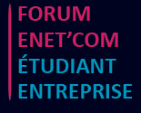
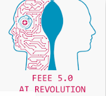
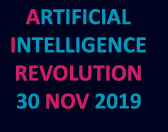
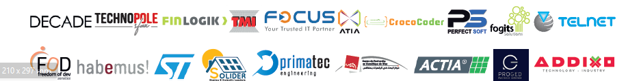

|



|
Programme
|
Accueil des invités et cérémonie d’ouverture
|
| 08:00 - 08:45 |
Mise en valeur de la thématique du forum |
| 08:45 - 09:15 |
Mot d’ouverture de :
M. Hassene Mnif,Directeur de l’ENET’Com
Allocution de :
M. Abdelwahed Mokni, Président de l’Université de Sfax
M. Anis Oueslati, Gouverneur de Sfax
M. Kais Mejri, DG de l’Innovation - Ministère de l’Industrie et des PME
|
L’ENET’Com, Centre d'innovation de talents
|
| 09:15 - 09:45 |
Présenté par:
Mme. Rabeb Blaiech,4C ENET’Com
M. Achraf Mtibaa, 4C ENET’Com
|
L’ENET’Com : Success story
|
| 09:45 - 10:00 |
Présenté par:
Houssem Ben Hamed,TECHNOSOLAIRE
|
Présentation de nos partenaires
|
| 10:00 - 11:00 |
FOCUS DECADE TELNET PRIMATECADDIXOFREEDOM OF DEV |
ACTIA STMICROELECTRONICS HABEMUSPERFECTSOFTFINLOGIKFOGITS |
Pause café, networking et visite
des stands
|
| 11:00 - 11:30 |
|

|
Les registres cliniques : un pont vers
une santé intelligente
|
| 11:30 - 11:45 |
Dr.Rabie Razgallah,CEO Dacima Consulting et membre ATIA |
PANEL : How AI is transforming Industry and Business
|
| 11:45 -13:00 |
modéré par:
M. Bassem Ben Hamed,Maître de conférences - ENET’Com
Invités
M. Kais Mejri, DG de l’Innovation - Ministère de l’Industrie et des PME
M. Imed Hnana,CIO SCET-TUNISIE & Président de l’ATIA
Mme. Nebras Gharbi,DG de Digital HealthCare Systems
M. Mohamed Ben Ahmed,DG de STMICROELECTRONICS
M. Mohamed Jmaiel,Directeur Général du CRNS de Sfax
M. Fateh Krichen,Directeur Général du Technopôle de Sfax
|
Déjeuner, networking et visite des stands
|
| 13:00 - 14:00 |
Sessions de workshop
|
| 14:00 - 16:30 |
Thème : Industrie 4.0w
Modéré par : M. Anis Ben Abdennabi,Chef de pôle embarqué, GFI
|
|
| 14:00 - 16:30 |
Thème : Basics of Python
Modéré par : Dr. Oussema Feli, Formateur certifié, CrocoCoder
|
|
| 14:00 - 16:30 |
Thème : Prototyper rapidement avec Metor
Modéré par : M. Zied Feki, FDéveloppeur full-stack Java Script, PerfectSoft
|
|
| 14:00 - 16:30 |
Thème :Rebooting AI algorithms: Knowledge Reasoning & Deep Learning
Modéré par : M. Ala Eddine Ayadi, Data scientist at Relational AI
|
|
| 14:00 - 16:30 |
Thème :Deep Learning & Machine Learning
Modéré par : M. Wael Werda, ReGIM-Lab
|
|
| 14:00 - 16:30 |
Thème :Internet Of Things (IOT)
Modéré par : M. Mohamed Weld Hassan, HyperPanel
|
Clôture
|
| 16:30-17:00 |